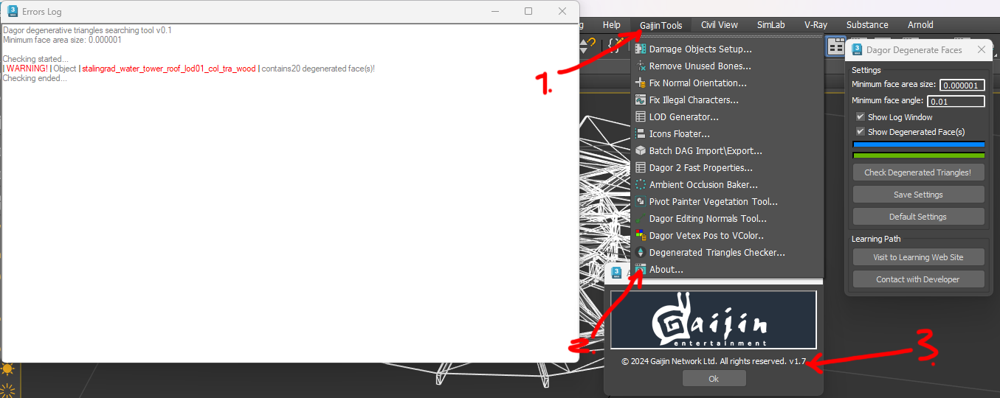
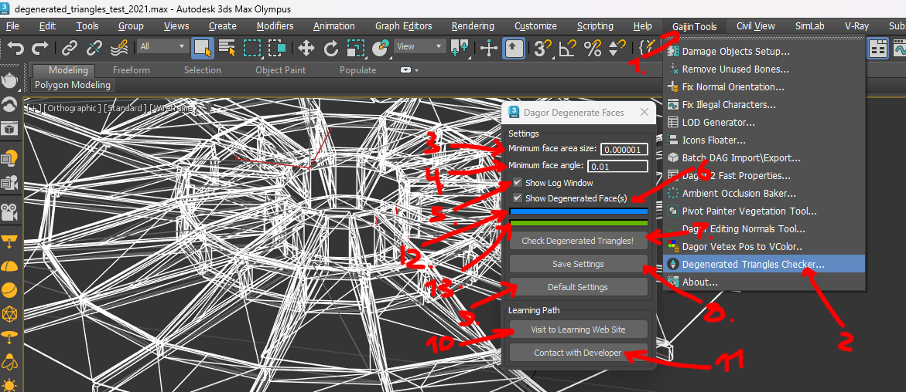
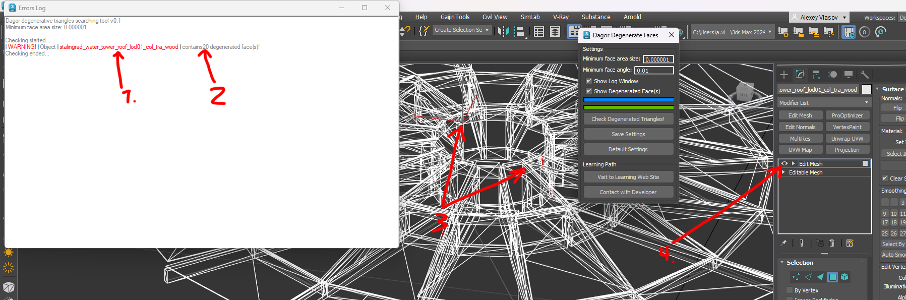

Dagor 2 Check Degenerated Faces Tool
Installation
Install the script following the provided instructions.
Important
This script requires 3ds Max 2014 or newer version to run.
Overview
This tool is designed to identify degenerate triangles in a scene by evaluating two key criteria: the minimum area of triangles and the minimum angle within triangles.
Example of the tool’s output: check_deg_faces_00.gif
Accessing the Check Degenerated Faces Tool
Navigate to Gaijin Tools (1) ▸ Degenerated Triangles Checker…. This will open the Error Log window.
To verify the version (3) of the script, go to Gaijin Tools (1) ▸ About (2). The About window will display the current version. It’s important to check this regularly to ensure your script is up to date.

Note
Make sure that the plugin version is at least 1.7.
Using the Check Degenerated Faces Tool
To get started, download the following test scene: degenerated_triangles_test_2021.max.
Important
This scene requires 3ds Max 2021 or a newer version.
Open the script by navigating to the menu (1) and selecting the script option (2).

The script window will appear with several key options:
Minimum face area size (3): Specifies the minimum area of triangles to be considered degenerate. The value is based on the current scene units (e.g., meters, inches).
Minimum face angle (4): Sets the minimum angle for triangle evaluation. If any angle within a triangle is smaller than this value, the triangle will be marked as degenerate. The default values in these fields are typically optimal for scenes imported from a
.dagfile, as the correct size and scale are automatically set.Show Log Window (5): Enables a log that lists all objects and any degenerate triangles found.
Show Degenerated Face(s) (6): Automatically adds a new modifier to all objects checked for degenerate triangles, highlighting the problematic areas for easy identification.
Check Degenerated Triangles! (7): Initiates the check process.
Save Settings (8): Saves the current script settings.
Default Settings (9): Loads the default settings.
Visit to LearningWeb Site (10): Links to this documentation.
Contact with Developer (11): Provides contact information for the developer if assistance is needed.
Progress Bar Blue (12): Displays the overall progress.
Progress Bar Green (13): Shows the progress for the currently selected object.
Running a Test
To test the loaded scene, select an object and press the start button (7). For example, if you select a simple object, the results will appear quickly:

As shown in the log, the object stalingrad_water_tower_roof_lod01_col_tra_wood (1) contains 20 degenerate triangles (2). These problematic triangles are highlighted in the Viewport (3) using the modifier (4). If you need to revert the scene to its original state, simply remove the added modifier from the highlighted objects.
Note
On average, the tool processes around 1,000 triangles in about two seconds, so larger objects or scenes may take longer.